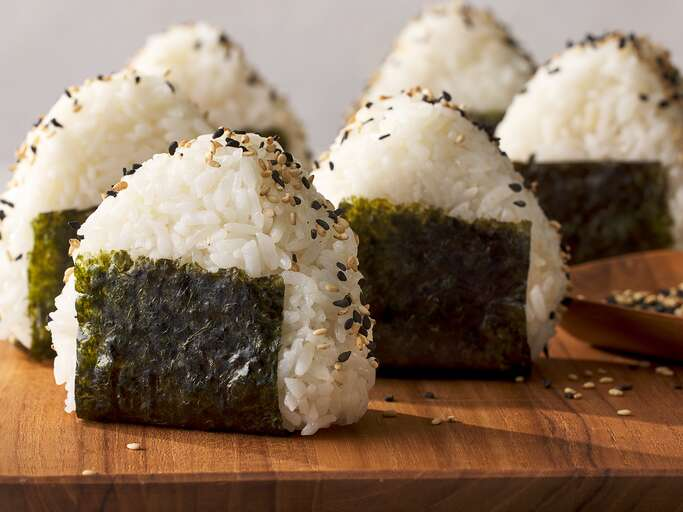

Onigiri(Japanese Rice Balls)

Description
This is a traditional dish in Japan that is easy to make for lunchboxes or
bento meals
Ingredients
- 4 cups of uncooked white rice
- water
- salt
- nori sheets
- bonito shavings
- Sesame seeds
Instructions
- Cook the rice
-
combine 1 cup water with salt in a small bowl and dampen hands with it
- Divide rice to 8 portions
-
Shape it into a triangle and wrap with nori sheets and sprinkle with
sesame seeds
- Add Seafood inside if you want